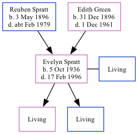

Evelyn Maud Wickham (née Spratt) 1936 - 1996 [ Home ] | [ Calendar ] | [ Surnames Index ] | [ Family History ]The daughter of Reuben Spratt (an agricultural labourer) and Edith Green Evelyn Spratt , the first cousin once-removed on the father's side of Nigel Horne , was born in Thanet, Kent, England on 5 Oct 19361,2,3,4 and. She married Cyril Wickham (with whom she had 2 surviving children Carol A and Clive D ) in Thanet around Nov 19565 . On 29 Sept 1939, she lived at 2 Alma Place, Margate, Kent, England.
She died on 17 Feb 1996 in Thanet2,4 .
Parents Reuben was born on 3 May 1896Edith Maud Caroline was born on 31 Dec 1896Citations England & Wales births 1837-2006 - Findmypast England & Wales deaths 1837-2007 - Findmypast England & Wales, Birth Index: 1916-2005 Online publication - Provo, UT, USA: The Generations Network, Inc., 2008.Original data - General Register Office. England and Wales Civil Registration Indexes. London, England: General Register Office. © Crown copyright. Published by permission of the Cont England & Wales, Death Index: 1984-2005 Online publication - Provo, UT, USA: The Generations Network, Inc., 2007.Original data - General Register Office. England and Wales Civil Registration Indexes. London, England: General Register Office. © Crown copyright. Published by permission of the Cont England & Wales, Marriage Index: 1916-2005 Online publication - Provo, UT, USA: The Generations Network, Inc., 2009.Original data - General Register Office. England and Wales Civil Registration Indexes. London, England: General Register Office. © Crown copyright. Published by permission of the Cont Media 1939 Register Transcription - TNA-R39-1755-1755D-006-38 England & Wales births 1837-2006 - BMD/B/1936/4/AZ/001038/019 England & Wales marriages 1837-2005 - BMD/M/1956/4/AZ/001071/042 England & Wales deaths 1837-2007 - BMD/D/1996/2/81708899 Family Tree Map
Generated by ged2site . Last updated on Feb 19, 2025